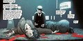
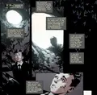

Batman's Background
Batman's Background
Why so many variations?
One of the best things about Batman is how many different storylines give different interpretations of him. This means there is some variation between most stories when it comes to his background.
His Backstory
 Although there is a lot of variation between each storyline, the basis of his backstory remains the same. A young Bruce Wayne went to go see "The Legend of Zorro" with his parents at a theater. Instead of waiting for the car to come to the theater, Thomas Wayne decided to cut through an alley way known as Crime Alley. The Waynes then got held at gunpoint by Joe Chill. Bruce watched as Chill shot both his mother and his father in cold blood, stealing his mothers pearl necklace. He was the only survivor. The police show up and we meet a young Commissioner James Gordon. Alfred, Bruce's butler, comes to pick Bruce up.
This is where the story starts to diverge. Some stories say Alfred pushed Bruce to learn the skills he needed to be Batman. Some claim Alfred urged against it. Some say Bruce did it all on his own and Alfred simply didn't stop him.
Where He Was Trained
 The general storyline claims Bruce, after he became an adult, learned his techniques from Tibetan monks. They didn't directly teach him, but he learned through his time in a monastery. There is other variations aswell, such as him fighting in gladiators, or a particular monk training him in everything.
Why Bats?
The two main stories I have heard as to why Bruce chose a Bat to represent him both start at the same issue. Fear. In both the stories i've come to hear, Bruce chose the image of a bat because he was afraid of them. In one, a flock of bats fly over and scare him after his parent's murder. In another, he had wandered around his estate and fell into a cave filled with bats where he was stuck for hours. He wanted to overcome his fear by embracing it.
His Justification
There are reasons Batman does what he does. This is where the Batman community can become a bit divided. Bruce's reasons for his crime fighting sprees are vague, but guided. My interpretation paints Batman in a more negative light. Batman is perpetually angry and needs something to take it out on. He isn't about justice like he claims, that is simply a mask. No, if Bruce cared about justice, he would lock his criminals up. He would be able to justify killing. Instead, he lets them escape, both from Arkham and from himself in multiple comics. His motive for his crime fighting is an outlet to let his anger out on those who, in his and societies mind, deserve it. But his justification is that these are criminals, but no one deserves to die. It is a dance. In many many comics it is implied, and sometimes outright stated, that Batman values his villains more than his allies.
This is why Batman is such a fantastic character. He has enough depth that my interpretation of his motives could start an insane argument.